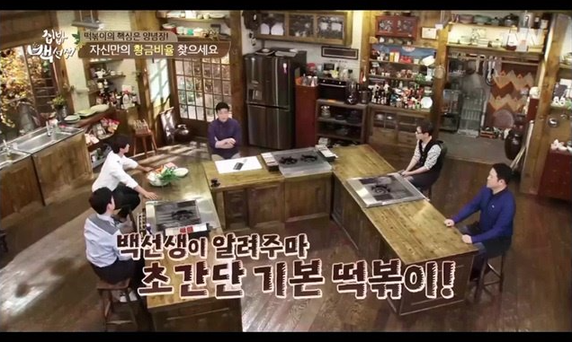

백종원 떡볶이 레시피
준비물
- 떡 두컵(떡국떡도 괜찮음)
- 설탕 한컵(너무 달 것 같으면 줄인다. 또는 단맛을 내는 다른 재료 사용)
- 고춧가루 한컵
- 고추장 2/3컵
- 진간장 반컵
- 물 한컵
- 파 2개
- 어묵 (취향껏 넣는다. 안 넣어도 무방)
- 후춧가루 2번 톡톡
레시피 순서
- 양념장 - 설탕(한컵), 고춧가루(한컵), 고추장(2/3컵), 진간잔(반컵), 물(한컵)을 양념장 그릇에 넣고 섞어준다.
- 떡을 살짝 헹구고 파(2개)를 잘게 썰고 어묵을 적당히 썰어준다.
- 팬에 떡, 어묵, 파를 넣고 양념장(반컵), 물(한컵)을 넣고 끓여준다.
- 후춧가루(2톡)를 넣고 잘 졸여주면 떡볶이 완성!



사진 출처:tvn